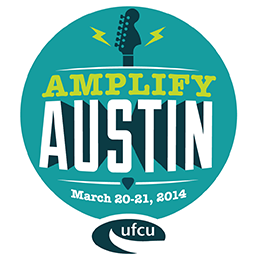

Advocacy Outreach participated in Amplify Austin 2014 and we recieved $3085. in donations!! We are grateful!! Thank you! Amplify Austin event raised over $5.7 million this year to over 457 non-profits!!!
As members, we will have our AO page hosted the full year with this link below! You may donate there or donate here!
Thank you again!!!!

February 28, 2014
The fundraising group, I Live Here, I Give Here, amps up the volume to make this one 24 hour period a record breaking fundraising event. Last year they provided the platform for Austinites and local area companies to donate to area Non-profits in which they gathered over 2.8 million dollars! They also provide nice incentives to receive more funds through Amplify Austin in accordance to some special categories. The web site is set up so that anyone can place their donation now to be counted on March 20th to avoid the rush!!!
Advocacy Outreach really needs your support in order to continue their work to prevent homelessness and literacy programs. Through our many programs we are able to help people step up in life through literacy and life skills. Through our ESL classes we help parents become English speaking and able to help their children in schools. Through our civics and GED classes, we provide skills so others can obtain jobs. Our Early Childhood Development Center provides social skills and education for pre-K children as their parents learn English in our Family Literacy program.
Many of our former students now thrive due to additional classes they took from Advocacy Outreach. These people become stronger community members! Each donation helps another person progress past tough situations and towards sustainability! It takes community!!!
Please donate now at the link below, or you can also donate directly at this web site. The benefits of donating with the Amplify Austin day, is that Advocacy Outreach can benefit through additional monetary incentives when we have met certain criteria.
Please, we need your help! Please tell your friends and those in business that you think could help us. A minimum of $25. donation to any amount above that is greatly appreciated and goes directly in to our many programs. Our page is at https://amplifyatx.ilivehereigivehere.org/AdvocacyOutreach/overview
Thank you!